從腦斷片警訊到黃金預防守則，帶您一步步認識失智、對抗失智、守護記憶。
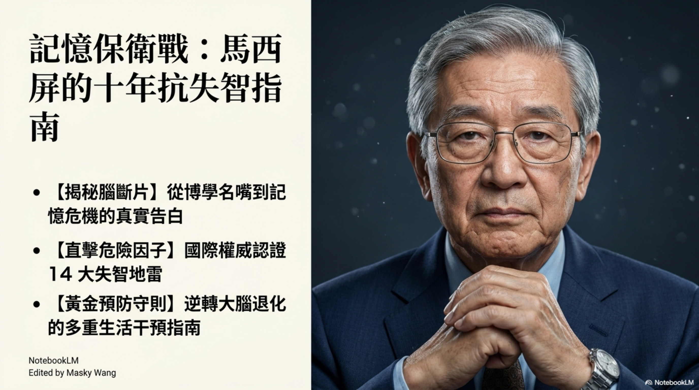
歲月靜好，但記憶有時卻如指縫間的流沙，悄悄流逝。當我們走過人生大半個年頭，累積了無數珍貴的風景，才猛然發覺，最令人畏懼的不是軀體的衰老，而是遺忘。這不僅是一場與時間的賽跑，更是為了守護我們一生摯愛的記憶保衛戰。
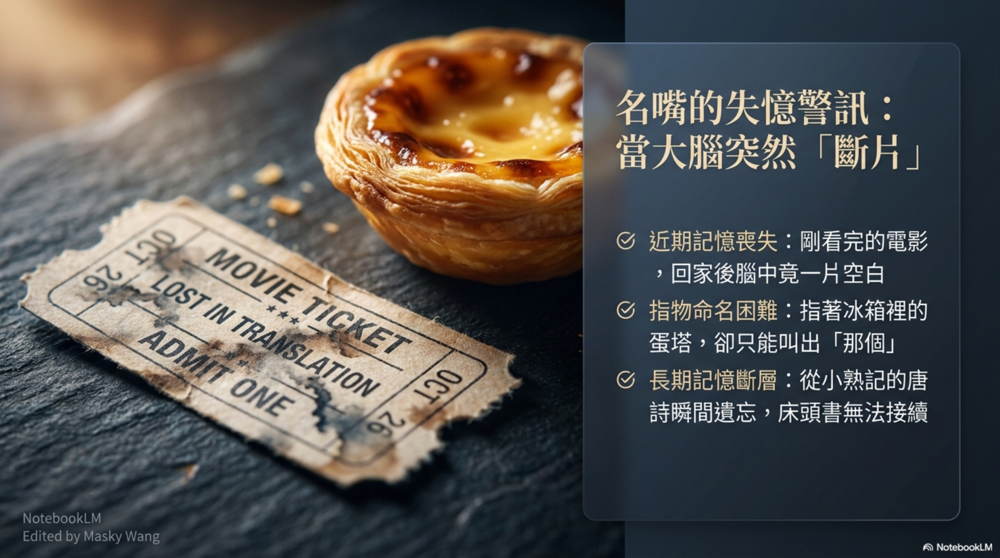
有時候，警訊來得無聲無息。或許是剛看完一場動人的電影，轉身回家，腦海裡卻是一片空白；或許是打開冰箱，指著熟悉的蛋塔，千言萬語卻只剩下一句「那個」。甚至，那些從小倒背如流的唐詩、床頭翻閱過無數次的書頁，都在某個瞬間徹底斷層。這不是單純的累了，這是大腦在向我們微弱地求救。
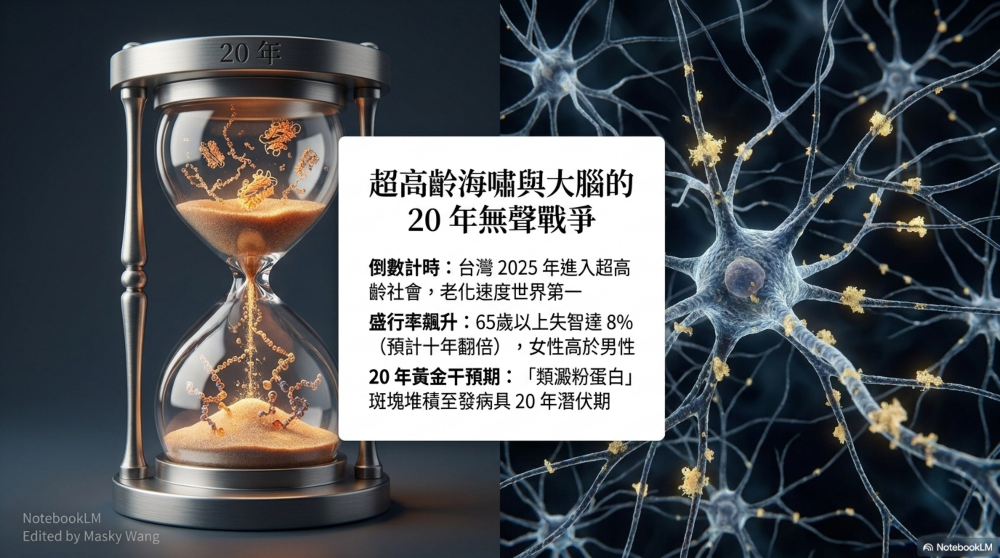
時間的沙漏不曾停歇，我們所在的這塊土地，即將迎來超高齡的浪潮，老化速度位居世界第一。當我們看著那些腦神經元逐漸凋零，其實這場無聲的戰爭早在發病前二十年就已經悄悄開打。類澱粉蛋白在腦中日復一日地堆積，這漫長的二十年，是大腦給我們的最後寬容，也是我們唯一能逆轉局勢的黃金干預期。
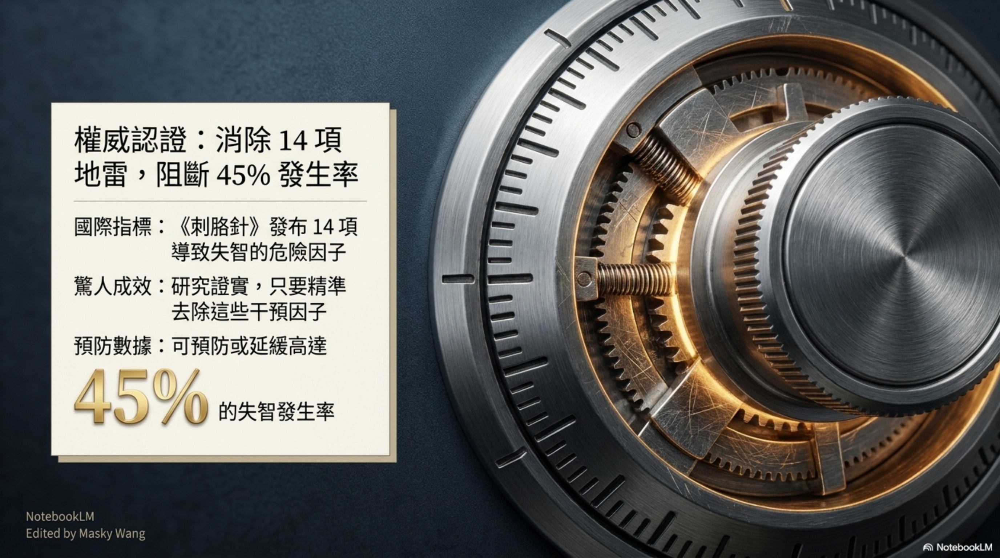
醫學界曾給出一絲曙光。權威期刊《刺胳針》明白地列出了十四項導致失智的危險地雷。研究告訴我們一個平靜卻有力量的事實：只要我們願意轉念，精準地拆除這些生活中的干預因子，就能夠將高達百分之四十五的失智發生率，硬生生地擋在門外。
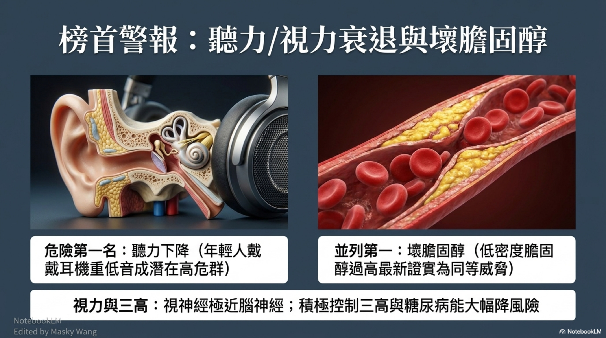
有些危機，藏在我們習以為常的細節裡。誰能想到，聽力的衰退，竟是侵蝕大腦的第一名殺手，而年輕時習慣戴耳機聽重低音，早就埋下了潛在的高危險群因子。血液中過高的壞膽固醇，也在最新的研究中與聽力並列為最大的威脅。加上視力退化與三高的侵襲，這些感官與血管的損傷，都在不知不覺中切斷了腦神經與世界的連結，因此積極控制三高與糖尿病便顯得格外重要。
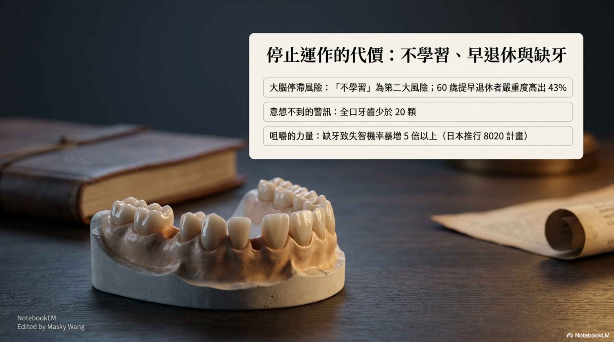
生命是一條流動的河，一旦停止，水就濁了。當我們不再學習，大腦便會面臨第二大風險的停滯危機；而若選擇在六十歲提早退休，失智的嚴重程度甚至會高出百分之四十三。甚至，連我們口中的牙齒都息息相關，當全口牙齒少於二十顆，失去咀嚼的刺激，失智機率將暴增五倍以上。保持咀嚼，保持學習，就是在告訴大腦，我們還熱愛著生活。
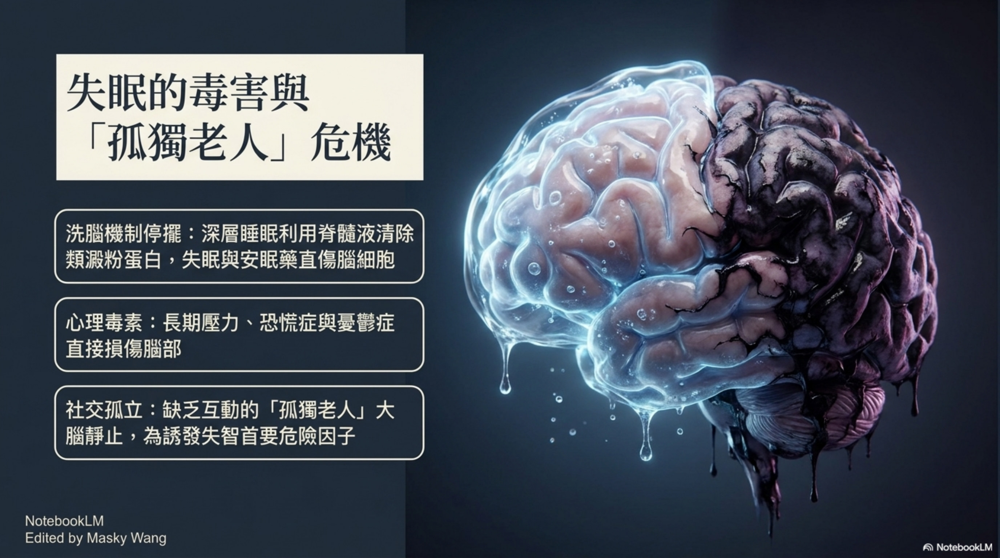
夜晚，本該是大腦自我修復的靜謐時光。深層的睡眠，能喚醒大腦利用脊髓液清除類澱粉蛋白的洗腦機制；然而，失眠與過度依賴安眠藥，卻粗暴地傷害了腦細胞。比失眠更痛的，是心靈的孤絕。缺乏互動的孤單老人，會讓大腦陷入死寂，成為誘發失智的首要危險因子，而長期的生活壓力、恐慌症與憂鬱症，也如同無形的毒素，一點一滴地直接損傷神經元。
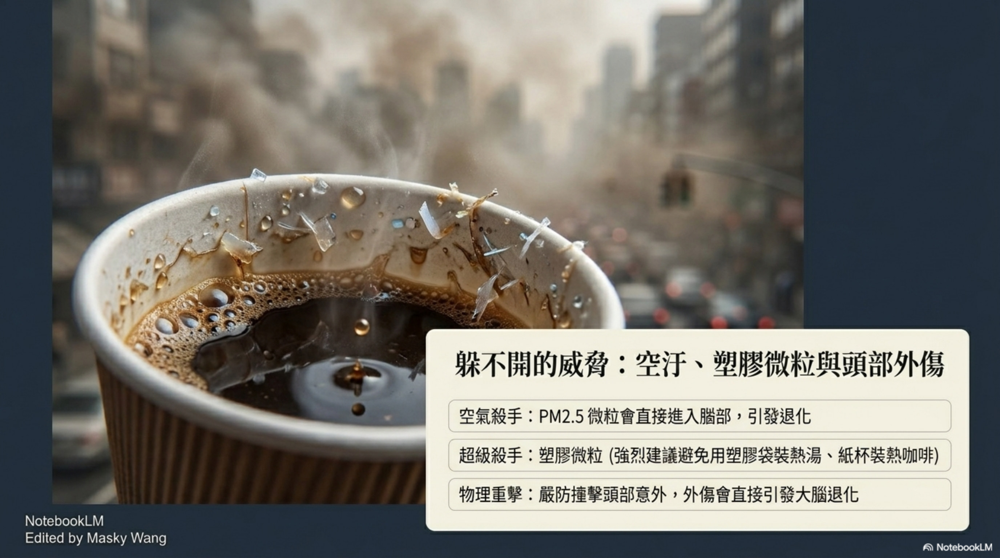
走出戶外，我們依然需要保持警覺。空氣中懸浮的 PM2.5 微粒，會直接進入腦部引發退化；而為了貪圖方便，用塑膠袋裝熱湯、紙杯裝熱咖啡所溶出的超級殺手塑膠微粒，更是我們強烈建議避免的日常地雷。就連一次不經意的跌倒意外，造成頭部外傷，都可能成為直接引發大腦退化的導火線。
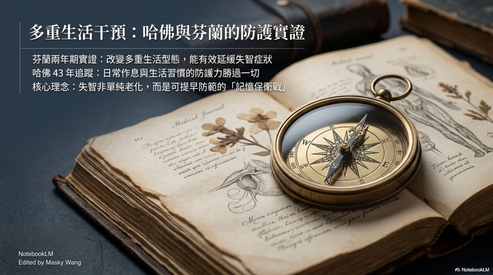
面對這些挑戰，我們並非束手無策。來自哈佛大學四十三年的長期追蹤，以及芬蘭兩年期的實證研究都告訴我們，真正的防護傘不是奇蹟，而是改變多重生活型態。日常作息與生活習慣的防護力勝過一切，這是一場可以提早防範的記憶保衛戰，而非單純的老化宿命。
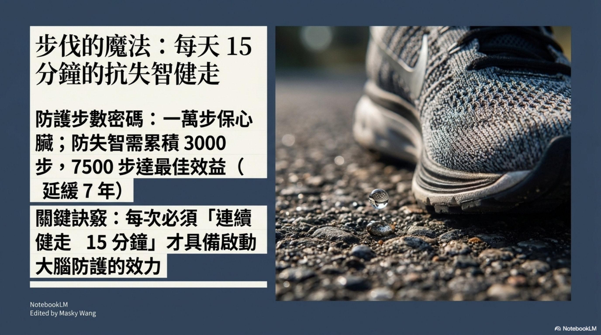
每天給自己一段專屬的步行時光吧。日行一萬步是為了保護心臟，但若要防範失智，我們需要累積三千步，走到七千五百步便能達到延緩七年的最佳效益。重點不在於追求極致的數字，而是一份堅持，每次必須連續健走十五分鐘，才具備啟動大腦防護效力的魔法。
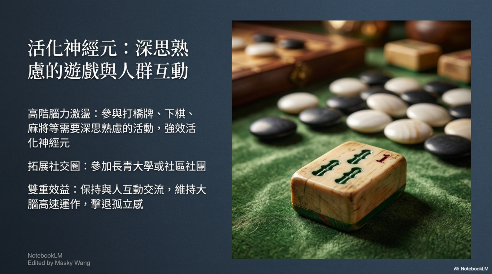
我們的腦神經元，渴望著被挑戰與被需要。閒暇時，不妨找三五好友下棋、打麻將或是玩橋牌，在這些需要深思熟慮的高階腦力激盪中，神經元會再次強效活化起來。走入人群，參加長青大學或社區的社團，那份真摯的互動交流，能擊退孤立的寒意，讓大腦維持在雙重效應的高速運轉狀態。
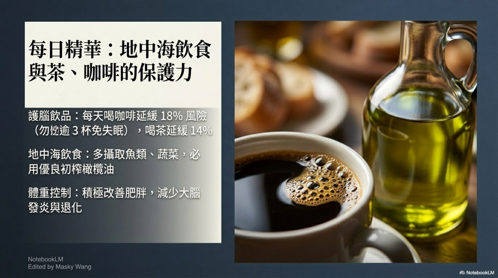
餐桌上的選擇，也是愛護自己的一種方式。多攝取魚類、蔬菜，並必用優良初榨橄欖油的地中海飲食，能讓身體減少大腦發炎與退化，同時也要積極改善肥胖問題。每天早晨一杯醇厚的咖啡，或是午後一壺清香的好茶，不僅是生活中的小確幸，更是能延緩百分之十四到十八風險的護腦飲品，只要記得咖啡勿逾三杯以免失眠即可。
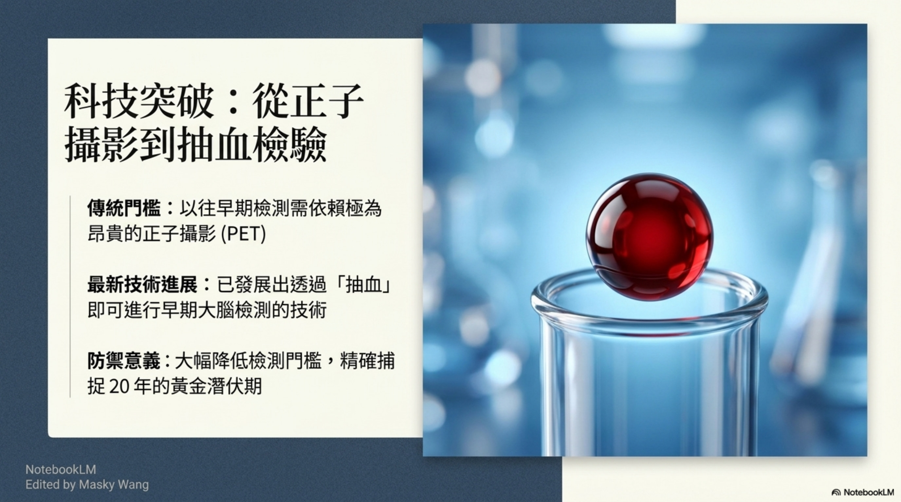
時代的進步，也為我們帶來了新的希望。過去，想早期檢測大腦的異狀，必須仰賴極為昂貴的正子攝影；如今，科技的進展讓我們透過簡單的抽血，就能大幅降低檢測門檻，精準捕捉到發病前那二十年的黃金潛伏期。
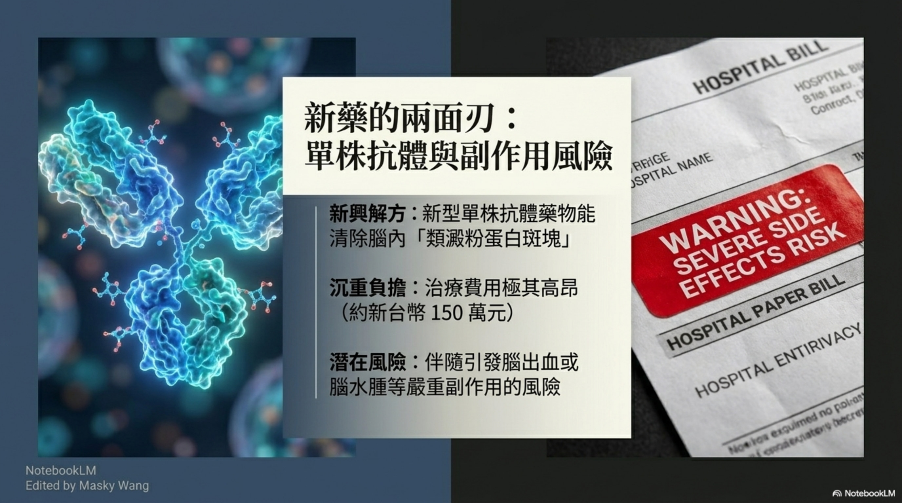
科學的腳步從未停歇，新藥帶來了希望的曙光，但我們也必須保持冷靜。在等待醫學突破的同時，最有力的武器始終握在我們自己手中——那就是每一天落實的生活選擇，每一個守護大腦的好習慣。
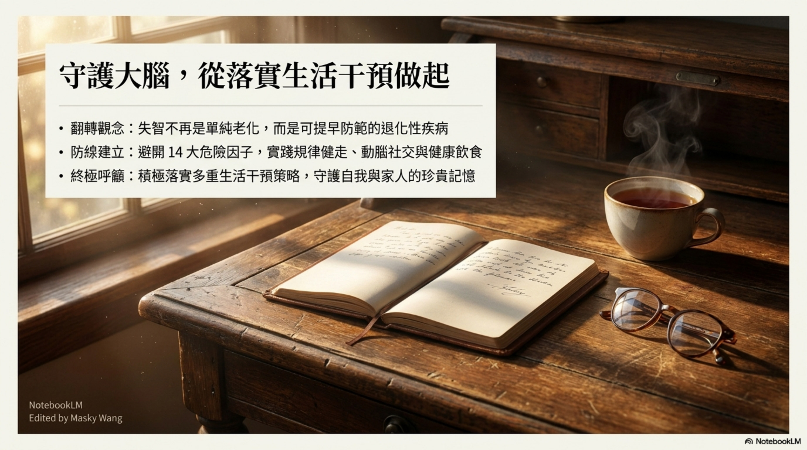
記憶，是我們與世界連結最深的橋樑。守護它，不需要等待奇蹟，只需要從今天起，邁開步伐、拿起書本、端起那杯咖啡，然後——好好珍惜每一次與所愛之人相聚的當下。這一場記憶保衛戰，我們一起打，一起贏。